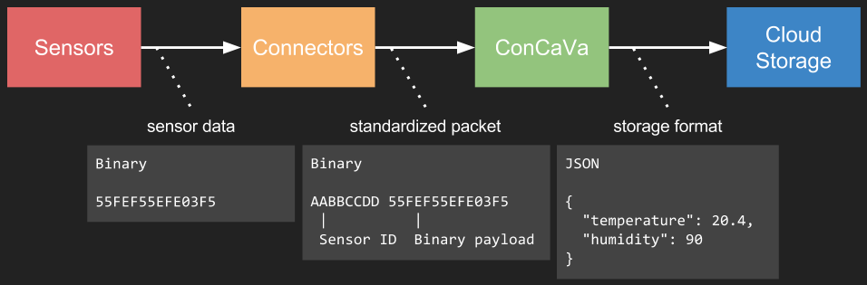

ConCaVa
A functional & technical introduction
by Kukua
Why?
Big problems require a scalable and generic solution.
Problem
- Calibrating, validating, and storing sensor data is hard
- Why reinvent the wheel?
Solution
- ConCaVa: Convert, calibrate, and validate
- Replaceable components
- Token based authentication
- Plug-and-play/custom connectors

Connectors
- Placed close to the sensors
- Collect and convert payload to any binary format
- Send payload and authentication token to ConCaVa
Example dataflow
Use case
LoRa weather station
Constraints
- Limited package size (51 bytes)
- "begrenzing aan gebruik van het spectrum"?
Attributes
- Wind speed
- Wind direction
- Gust speed
- Gust direction
- Rainfall
- Temperature
- Humidity
- Barometric pressure
- Ultraviolet (UV) light
Ways to get the data across
- API url parameters
- XML data
- Binary data
Smaller payload sizes are better.
API url parameters
The traditional way
http://weatherstation.wunderground.com/weatherstation/updateweathers
tation.php?id=KCASANFR5&password=XXXXXX&dateutc=2000-01-01+10%3A32%3
A35&windspeedmph=12&winddir=230&windgustmph=12&windgustdir=230&raini
n=0&tempf=70&humidity=90&baromin=29.1&uvl=20
~173 bytes of data
XML data
KCASANFR5
XXXXXX
2000-01-01+10%3A32%3A35
12
230
12
12
0
70
90
29.1
20
~370 bytes of data
Binary data
- ID = 8 bytes
- Password = ~16 bytes
- Date = 4 bytes
- Wind speed = 2 bytes
- Wind direction = 1 byte
- Gust speed = 1 byte
- Gust direction = 1 byte
- Rainfall = 1 byte
- Temperature = 2 bytes
- Humidity = 1 byte
- Barometric pressure = 1 byte
- Ultraviolet (UV) light = 1 byte
40 bytes of data
Binary payload
- Efficient
- Flexible
- Small payload size
Parsing
Which byte contains what data?
- Metadata required to make sense of the data
- Dynamic metadata enables flexible binary payload
This is where ConCaVa comes in
ConCaVa is a generic binary payload processor.
Determines the metadata by device ID.
Used to convert, calibrate, and validate the sensor data.
Stores the sensor data in the Cloud Storage
(the Orion Context Broker, for example).
Three simple steps
- Convert: use metadata to parse the binary payload
- Calibrate: filter out sensor misreadings
(e.g. temperatures below −273.15°C) - Validate: transform data to desired format
(e.g. convert Fahrenheit to Celcius)
ConCaVa supports every thinkable rule for converting, validating, and calibrating sensor data.
Example
For example: wind direction of 1 byte (integer value 0-255).
Convert: binary 00011110 = integer value 30
Calibrate: 0 ≤ value ≤ 255
Validator: value = 360 * (value / 255)
Result: 42.4°
Highly customizable
- Configurable
- Dynamic metadata
- Custom validators
- Replaceable components
- Cloud Storage
- Token-based authenticator
- Connectors
Roadmap
- Open-source components
- Configuration options
- Documented
- Automated testing (unit-tests)
- Graphical interface, for managing metadata and viewing sensor data